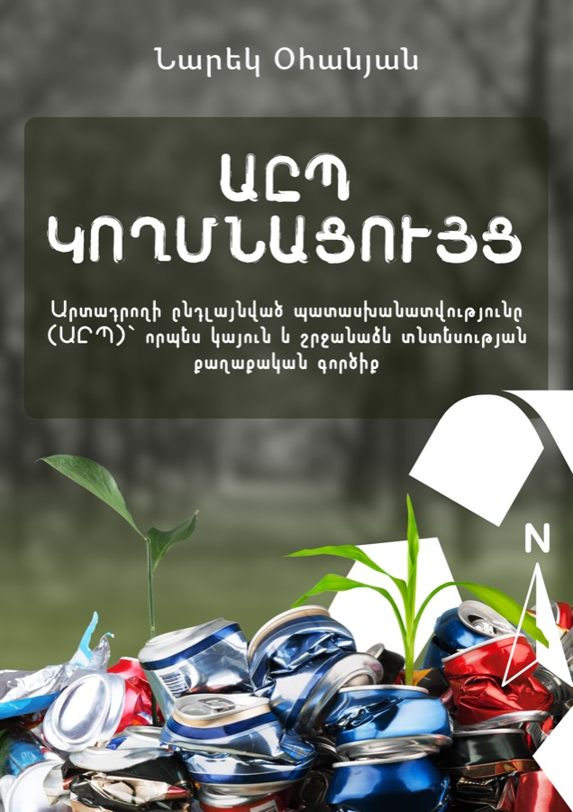
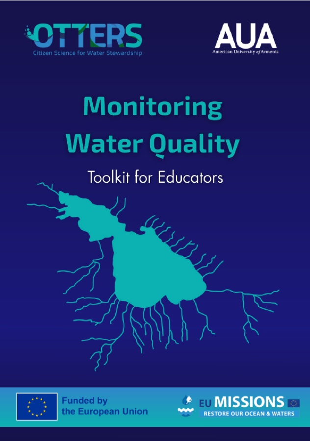
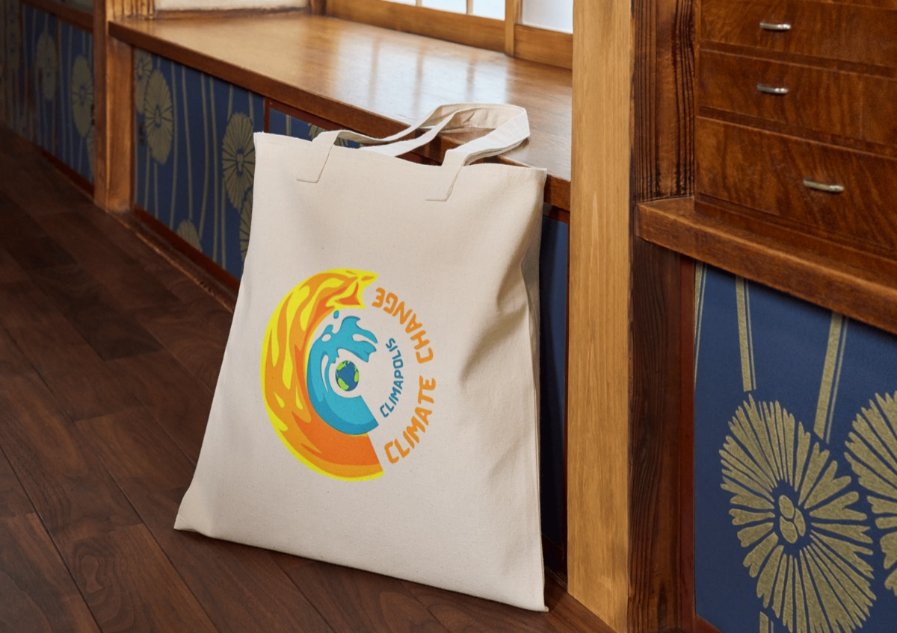
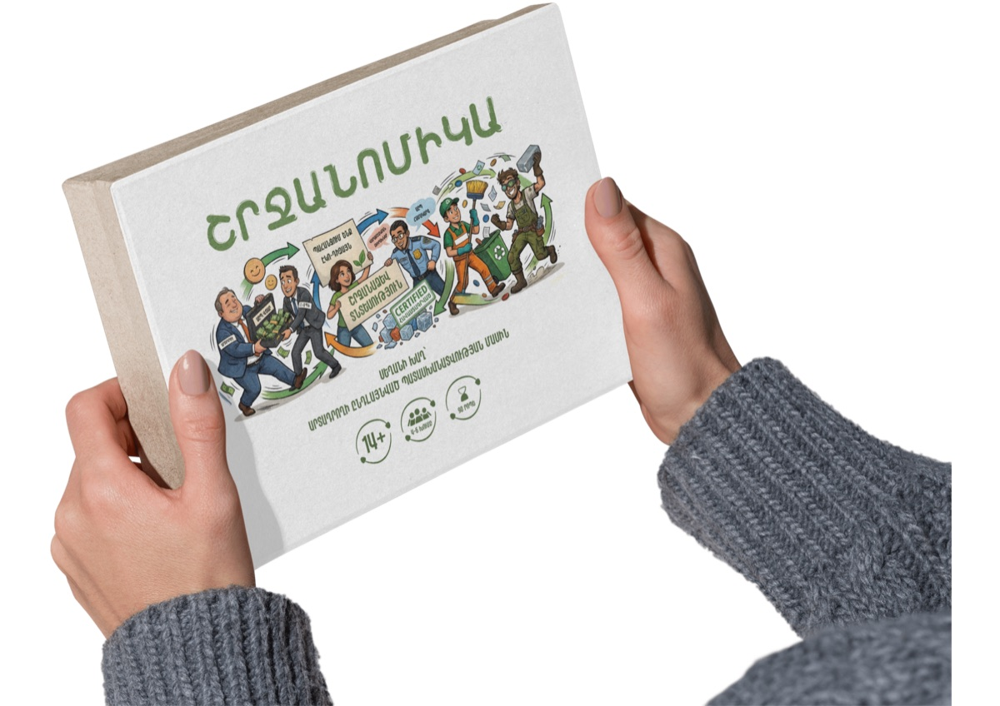

Resource hub
Take it and use it
Everything here is free to download, play, teach with or adapt. Manuals I wrote or co-wrote, board games built for classrooms, and a full video academy — made to be handed on rather than held.
Resource library
-

Manual Authored
EPR Compass
Extended Producer Responsibility as a Policy Tool for Circular Economy
A working guide to the policy instrument that makes producers responsible for what they put on the market — and for what happens to it afterwards.
Read EPR Compass (PDF, opens in a new tab) -

Toolkit Co-authored
OTTERS
Monitoring Water Quality — Toolkit for Educators
Classroom-ready protocols for taking real measurements of a river or lake, built so a teacher without a lab can still run genuine field science.
Read the OTTERS toolkit (PDF, opens in a new tab) -

Board game Hard copy
Climapolis
A game on climate adaptation
Players run a city facing the impacts already arriving — heat, drought, flood — and must spend a limited budget on adaptation before the next season lands. It teaches the hardest lesson in adaptation: you cannot protect everything at once.
Request a copy -

Board game Hard copy
Shrjanomics
The EPR game
The companion to the EPR Compass. Players take the part of producers, municipalities and recyclers, and discover by playing why a packaging fee set slightly too low quietly collapses the whole collection system.
Request a copy -
Platform Co-authored
Գրական անկյուն
Master the Armenian essay
A free writing workshop for Armenian literature and history: source texts side by side, a guided four-step drafting flow, the official marking rubrics, printable tests and a study assistant. Built for students sitting the exam and for the teachers preparing them.
Open the platform